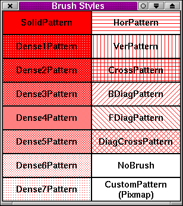
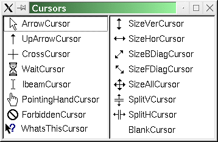
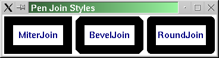

Qt Class Reference
The Qt class is a namespace for miscellaneous identifiers
that need to be global-like.
More...
#include <qnamespace.h>
Inherited by QObject, QPixmap, QBrush, QCanvasItem, QCursor, QPainter, QEvent, QIconViewItem, QKeySequence, QListViewItem, QCustomMenuItem, QPen, QStyleSheetItem, QSyntaxHighlighter, QTab, QTableItem, QThread, QToolTip, and QWhatsThis.
List of all member functions.
Public Members
- enum ButtonState { NoButton = 0x0000, LeftButton = 0x0001, RightButton = 0x0002, MidButton = 0x0004, MouseButtonMask = 0x0007, ShiftButton = 0x0100, ControlButton = 0x0200, AltButton = 0x0400, MetaButton = 0x0800, KeyButtonMask = 0x0f00, Keypad = 0x4000 }
- enum Orientation { Horizontal = 0, Vertical }
- enum SortOrder { Ascending, Descending }
- enum AlignmentFlags { AlignAuto = 0x0000, AlignLeft = 0x0001, AlignRight = 0x0002, AlignHCenter = 0x0004, AlignJustify = 0x0008, AlignHorizontal_Mask = AlignLeft | AlignRight | AlignHCenter | AlignJustify, AlignTop = 0x0010, AlignBottom = 0x0020, AlignVCenter = 0x0040, AlignVertical_Mask = AlignTop | AlignBottom | AlignVCenter, AlignCenter = AlignVCenter | AlignHCenter }
- enum TextFlags { SingleLine = 0x0080, DontClip = 0x0100, ExpandTabs = 0x0200, ShowPrefix = 0x0400, WordBreak = 0x0800, BreakAnywhere = 0x1000, NoAccel = 0x4000 }
- enum WidgetState { WState_Created = 0x00000001, WState_Disabled = 0x00000002, WState_Visible = 0x00000004, WState_ForceHide = 0x00000008, WState_OwnCursor = 0x00000010, WState_MouseTracking = 0x00000020, WState_CompressKeys = 0x00000040, WState_BlockUpdates = 0x00000080, WState_InPaintEvent = 0x00000100, WState_Reparented = 0x00000200, WState_ConfigPending = 0x00000400, WState_Resized = 0x00000800, WState_AutoMask = 0x00001000, WState_Polished = 0x00002000, WState_DND = 0x00004000, WState_Reserved0 = 0x00008000, WState_FullScreen = 0x00010000, WState_OwnSizePolicy = 0x00020000, WState_CreatedHidden = 0x00040000, WState_Maximized = 0x00080000, WState_Minimized = 0x00100000, WState_ForceDisabled = 0x00200000, WState_Exposed = 0x00400000, WState_HasMouse = 0x00800000 }
- enum WidgetFlags { WType_TopLevel = 0x00000001, WType_Dialog = 0x00000002, WType_Popup = 0x00000004, WType_Desktop = 0x00000008, WType_Mask = 0x0000000f, WStyle_Customize = 0x00000010, WStyle_NormalBorder = 0x00000020, WStyle_DialogBorder = 0x00000040, WStyle_NoBorder = 0x00002000, WStyle_Title = 0x00000080, WStyle_SysMenu = 0x00000100, WStyle_Minimize = 0x00000200, WStyle_Maximize = 0x00000400, WStyle_MinMax = WStyle_Minimize | WStyle_Maximize, WStyle_Tool = 0x00000800, WStyle_StaysOnTop = 0x00001000, WStyle_ContextHelp = 0x00004000, WStyle_Reserved = 0x00008000, WStyle_Mask = 0x0000fff0, WDestructiveClose = 0x00010000, WPaintDesktop = 0x00020000, WPaintUnclipped = 0x00040000, WPaintClever = 0x00080000, WResizeNoErase = 0x00100000, WMouseNoMask = 0x00200000, WStaticContents = 0x00400000, WRepaintNoErase = 0x00800000, WX11BypassWM = 0x01000000, WWinOwnDC = 0x00000000, WMacNoSheet = 0x00000000, WMacDrawer = 0x00000000, WX11BypassWM = 0x00000000, WWinOwnDC = 0x01000000, WMacNoSheet = 0x00000000, WMacDrawer = 0x00000000, WGroupLeader = 0x02000000, WShowModal = 0x04000000, WNoMousePropagation = 0x08000000, WSubWindow = 0x10000000, WStyle_Splash = 0x20000000, WNoAutoErase = WRepaintNoErase | WResizeNoErase, WNorthWestGravity = WStaticContents, WType_Modal = WType_Dialog | WShowModal, WStyle_Dialog = WType_Dialog, WStyle_NoBorderEx = WStyle_NoBorder }
- enum WindowState { WindowNoState = 0x00000000, WindowMinimized = 0x00000001, WindowMaximized = 0x00000002, WindowFullScreen = 0x00000004, WindowActive = 0x00000008 }
- enum ImageConversionFlags { ColorMode_Mask = 0x00000003, AutoColor = 0x00000000, ColorOnly = 0x00000003, MonoOnly = 0x00000002, AlphaDither_Mask = 0x0000000c, ThresholdAlphaDither = 0x00000000, OrderedAlphaDither = 0x00000004, DiffuseAlphaDither = 0x00000008, NoAlpha = 0x0000000c, Dither_Mask = 0x00000030, DiffuseDither = 0x00000000, OrderedDither = 0x00000010, ThresholdDither = 0x00000020, DitherMode_Mask = 0x000000c0, AutoDither = 0x00000000, PreferDither = 0x00000040, AvoidDither = 0x00000080 }
- enum BGMode { TransparentMode, OpaqueMode }
- enum PaintUnit { PixelUnit, LoMetricUnit, HiMetricUnit, LoEnglishUnit, HiEnglishUnit, TwipsUnit }
- enum GUIStyle { MacStyle, WindowsStyle, Win3Style, PMStyle, MotifStyle } (obsolete)
- enum SequenceMatch { NoMatch, PartialMatch, Identical }
- enum Modifier { META = 0x00100000, SHIFT = 0x00200000, CTRL = 0x00400000, ALT = 0x00800000, MODIFIER_MASK = 0x00f00000, UNICODE_ACCEL = 0x10000000, ASCII_ACCEL = UNICODE_ACCEL }
- enum Key { Key_Escape = 0x1000, Key_Tab = 0x1001, Key_Backtab = 0x1002, Key_BackTab = Key_Backtab, Key_Backspace = 0x1003, Key_BackSpace = Key_Backspace, Key_Return = 0x1004, Key_Enter = 0x1005, Key_Insert = 0x1006, Key_Delete = 0x1007, Key_Pause = 0x1008, Key_Print = 0x1009, Key_SysReq = 0x100a, Key_Clear = 0x100b, Key_Home = 0x1010, Key_End = 0x1011, Key_Left = 0x1012, Key_Up = 0x1013, Key_Right = 0x1014, Key_Down = 0x1015, Key_Prior = 0x1016, Key_PageUp = Key_Prior, Key_Next = 0x1017, Key_PageDown = Key_Next, Key_Shift = 0x1020, Key_Control = 0x1021, Key_Meta = 0x1022, Key_Alt = 0x1023, Key_CapsLock = 0x1024, Key_NumLock = 0x1025, Key_ScrollLock = 0x1026, Key_F1 = 0x1030, Key_F2 = 0x1031, Key_F3 = 0x1032, Key_F4 = 0x1033, Key_F5 = 0x1034, Key_F6 = 0x1035, Key_F7 = 0x1036, Key_F8 = 0x1037, Key_F9 = 0x1038, Key_F10 = 0x1039, Key_F11 = 0x103a, Key_F12 = 0x103b, Key_F13 = 0x103c, Key_F14 = 0x103d, Key_F15 = 0x103e, Key_F16 = 0x103f, Key_F17 = 0x1040, Key_F18 = 0x1041, Key_F19 = 0x1042, Key_F20 = 0x1043, Key_F21 = 0x1044, Key_F22 = 0x1045, Key_F23 = 0x1046, Key_F24 = 0x1047, Key_F25 = 0x1048, Key_F26 = 0x1049, Key_F27 = 0x104a, Key_F28 = 0x104b, Key_F29 = 0x104c, Key_F30 = 0x104d, Key_F31 = 0x104e, Key_F32 = 0x104f, Key_F33 = 0x1050, Key_F34 = 0x1051, Key_F35 = 0x1052, Key_Super_L = 0x1053, Key_Super_R = 0x1054, Key_Menu = 0x1055, Key_Hyper_L = 0x1056, Key_Hyper_R = 0x1057, Key_Help = 0x1058, Key_Direction_L = 0x1059, Key_Direction_R = 0x1060, Key_Space = 0x20, Key_Any = Key_Space, Key_Exclam = 0x21, Key_QuoteDbl = 0x22, Key_NumberSign = 0x23, Key_Dollar = 0x24, Key_Percent = 0x25, Key_Ampersand = 0x26, Key_Apostrophe = 0x27, Key_ParenLeft = 0x28, Key_ParenRight = 0x29, Key_Asterisk = 0x2a, Key_Plus = 0x2b, Key_Comma = 0x2c, Key_Minus = 0x2d, Key_Period = 0x2e, Key_Slash = 0x2f, Key_0 = 0x30, Key_1 = 0x31, Key_2 = 0x32, Key_3 = 0x33, Key_4 = 0x34, Key_5 = 0x35, Key_6 = 0x36, Key_7 = 0x37, Key_8 = 0x38, Key_9 = 0x39, Key_Colon = 0x3a, Key_Semicolon = 0x3b, Key_Less = 0x3c, Key_Equal = 0x3d, Key_Greater = 0x3e, Key_Question = 0x3f, Key_At = 0x40, Key_A = 0x41, Key_B = 0x42, Key_C = 0x43, Key_D = 0x44, Key_E = 0x45, Key_F = 0x46, Key_G = 0x47, Key_H = 0x48, Key_I = 0x49, Key_J = 0x4a, Key_K = 0x4b, Key_L = 0x4c, Key_M = 0x4d, Key_N = 0x4e, Key_O = 0x4f, Key_P = 0x50, Key_Q = 0x51, Key_R = 0x52, Key_S = 0x53, Key_T = 0x54, Key_U = 0x55, Key_V = 0x56, Key_W = 0x57, Key_X = 0x58, Key_Y = 0x59, Key_Z = 0x5a, Key_BracketLeft = 0x5b, Key_Backslash = 0x5c, Key_BracketRight = 0x5d, Key_AsciiCircum = 0x5e, Key_Underscore = 0x5f, Key_QuoteLeft = 0x60, Key_BraceLeft = 0x7b, Key_Bar = 0x7c, Key_BraceRight = 0x7d, Key_AsciiTilde = 0x7e, Key_nobreakspace = 0x0a0, Key_exclamdown = 0x0a1, Key_cent = 0x0a2, Key_sterling = 0x0a3, Key_currency = 0x0a4, Key_yen = 0x0a5, Key_brokenbar = 0x0a6, Key_section = 0x0a7, Key_diaeresis = 0x0a8, Key_copyright = 0x0a9, Key_ordfeminine = 0x0aa, Key_guillemotleft = 0x0ab, Key_notsign = 0x0ac, Key_hyphen = 0x0ad, Key_registered = 0x0ae, Key_macron = 0x0af, Key_degree = 0x0b0, Key_plusminus = 0x0b1, Key_twosuperior = 0x0b2, Key_threesuperior = 0x0b3, Key_acute = 0x0b4, Key_mu = 0x0b5, Key_paragraph = 0x0b6, Key_periodcentered = 0x0b7, Key_cedilla = 0x0b8, Key_onesuperior = 0x0b9, Key_masculine = 0x0ba, Key_guillemotright = 0x0bb, Key_onequarter = 0x0bc, Key_onehalf = 0x0bd, Key_threequarters = 0x0be, Key_questiondown = 0x0bf, Key_Agrave = 0x0c0, Key_Aacute = 0x0c1, Key_Acircumflex = 0x0c2, Key_Atilde = 0x0c3, Key_Adiaeresis = 0x0c4, Key_Aring = 0x0c5, Key_AE = 0x0c6, Key_Ccedilla = 0x0c7, Key_Egrave = 0x0c8, Key_Eacute = 0x0c9, Key_Ecircumflex = 0x0ca, Key_Ediaeresis = 0x0cb, Key_Igrave = 0x0cc, Key_Iacute = 0x0cd, Key_Icircumflex = 0x0ce, Key_Idiaeresis = 0x0cf, Key_ETH = 0x0d0, Key_Ntilde = 0x0d1, Key_Ograve = 0x0d2, Key_Oacute = 0x0d3, Key_Ocircumflex = 0x0d4, Key_Otilde = 0x0d5, Key_Odiaeresis = 0x0d6, Key_multiply = 0x0d7, Key_Ooblique = 0x0d8, Key_Ugrave = 0x0d9, Key_Uacute = 0x0da, Key_Ucircumflex = 0x0db, Key_Udiaeresis = 0x0dc, Key_Yacute = 0x0dd, Key_THORN = 0x0de, Key_ssharp = 0x0df, Key_agrave = 0x0e0, Key_aacute = 0x0e1, Key_acircumflex = 0x0e2, Key_atilde = 0x0e3, Key_adiaeresis = 0x0e4, Key_aring = 0x0e5, Key_ae = 0x0e6, Key_ccedilla = 0x0e7, Key_egrave = 0x0e8, Key_eacute = 0x0e9, Key_ecircumflex = 0x0ea, Key_ediaeresis = 0x0eb, Key_igrave = 0x0ec, Key_iacute = 0x0ed, Key_icircumflex = 0x0ee, Key_idiaeresis = 0x0ef, Key_eth = 0x0f0, Key_ntilde = 0x0f1, Key_ograve = 0x0f2, Key_oacute = 0x0f3, Key_ocircumflex = 0x0f4, Key_otilde = 0x0f5, Key_odiaeresis = 0x0f6, Key_division = 0x0f7, Key_oslash = 0x0f8, Key_ugrave = 0x0f9, Key_uacute = 0x0fa, Key_ucircumflex = 0x0fb, Key_udiaeresis = 0x0fc, Key_yacute = 0x0fd, Key_thorn = 0x0fe, Key_ydiaeresis = 0x0ff, Key_Back = 0x1061, Key_Forward = 0x1062, Key_Stop = 0x1063, Key_Refresh = 0x1064, Key_VolumeDown = 0x1070, Key_VolumeMute = 0x1071, Key_VolumeUp = 0x1072, Key_BassBoost = 0x1073, Key_BassUp = 0x1074, Key_BassDown = 0x1075, Key_TrebleUp = 0x1076, Key_TrebleDown = 0x1077, Key_MediaPlay = 0x1080, Key_MediaStop = 0x1081, Key_MediaPrev = 0x1082, Key_MediaNext = 0x1083, Key_MediaRecord = 0x1084, Key_HomePage = 0x1090, Key_Favorites = 0x1091, Key_Search = 0x1092, Key_Standby = 0x1093, Key_OpenUrl = 0x1094, Key_LaunchMail = 0x10a0, Key_LaunchMedia = 0x10a1, Key_Launch0 = 0x10a2, Key_Launch1 = 0x10a3, Key_Launch2 = 0x10a4, Key_Launch3 = 0x10a5, Key_Launch4 = 0x10a6, Key_Launch5 = 0x10a7, Key_Launch6 = 0x10a8, Key_Launch7 = 0x10a9, Key_Launch8 = 0x10aa, Key_Launch9 = 0x10ab, Key_LaunchA = 0x10ac, Key_LaunchB = 0x10ad, Key_LaunchC = 0x10ae, Key_LaunchD = 0x10af, Key_LaunchE = 0x10b0, Key_LaunchF = 0x10b1, Key_MediaLast = 0x1fff, Key_unknown = 0xffff }
- enum ArrowType { UpArrow, DownArrow, LeftArrow, RightArrow }
- enum RasterOp { CopyROP, OrROP, XorROP, NotAndROP, EraseROP = NotAndROP, NotCopyROP, NotOrROP, NotXorROP, AndROP, NotEraseROP = AndROP, NotROP, ClearROP, SetROP, NopROP, AndNotROP, OrNotROP, NandROP, NorROP, LastROP = NorROP }
- enum PenStyle { NoPen, SolidLine, DashLine, DotLine, DashDotLine, DashDotDotLine, MPenStyle = 0x0f }
- enum PenCapStyle { FlatCap = 0x00, SquareCap = 0x10, RoundCap = 0x20, MPenCapStyle = 0x30 }
- enum PenJoinStyle { MiterJoin = 0x00, BevelJoin = 0x40, RoundJoin = 0x80, MPenJoinStyle = 0xc0 }
- enum BrushStyle { NoBrush, SolidPattern, Dense1Pattern, Dense2Pattern, Dense3Pattern, Dense4Pattern, Dense5Pattern, Dense6Pattern, Dense7Pattern, HorPattern, VerPattern, CrossPattern, BDiagPattern, FDiagPattern, DiagCrossPattern, CustomPattern = 24 }
- enum MacintoshVersion { MV_Unknown = 0x0000, MV_9 = 0x0001, MV_10_DOT_0 = 0x0002, MV_10_DOT_1 = 0x0003, MV_10_DOT_2 = 0x0004, MV_10_DOT_3 = 0x0005, MV_10_DOT_4 = 0x0006, MV_CHEETAH = MV_10_DOT_0, MV_PUMA = MV_10_DOT_1, MV_JAGUAR = MV_10_DOT_2, MV_PANTHER = MV_10_DOT_3, MV_TIGER = MV_10_DOT_4 }
- enum WindowsVersion { WV_32s = 0x0001, WV_95 = 0x0002, WV_98 = 0x0003, WV_Me = 0x0004, WV_DOS_based = 0x000f, WV_NT = 0x0010, WV_2000 = 0x0020, WV_XP = 0x0030, WV_2003 = 0x0040, WV_VISTA = 0x0080, WV_NT_based = 0x00f0, WV_CE = 0x0100, WV_CENET = 0x0200, WV_CE_based = 0x0f00 }
- enum UIEffect { UI_General, UI_AnimateMenu, UI_FadeMenu, UI_AnimateCombo, UI_AnimateTooltip, UI_FadeTooltip, UI_AnimateToolBox }
- enum CursorShape { ArrowCursor, UpArrowCursor, CrossCursor, WaitCursor, IbeamCursor, SizeVerCursor, SizeHorCursor, SizeBDiagCursor, SizeFDiagCursor, SizeAllCursor, BlankCursor, SplitVCursor, SplitHCursor, PointingHandCursor, ForbiddenCursor, WhatsThisCursor, BusyCursor, LastCursor = BusyCursor, BitmapCursor = 24 }
- enum TextFormat { PlainText, RichText, AutoText, LogText }
- enum AnchorAttribute { AnchorName, AnchorHref }
- enum Dock { DockUnmanaged, DockTornOff, DockTop, DockBottom, DockRight, DockLeft, DockMinimized, Unmanaged = DockUnmanaged, TornOff = DockTornOff, Top = DockTop, Bottom = DockBottom, Right = DockRight, Left = DockLeft, Minimized = DockMinimized }
- enum DateFormat { TextDate, ISODate, LocalDate }
- enum TimeSpec { LocalTime, UTC }
- enum BackgroundMode { FixedColor, FixedPixmap, NoBackground, PaletteForeground, PaletteButton, PaletteLight, PaletteMidlight, PaletteDark, PaletteMid, PaletteText, PaletteBrightText, PaletteBase, PaletteBackground, PaletteShadow, PaletteHighlight, PaletteHighlightedText, PaletteButtonText, PaletteLink, PaletteLinkVisited, X11ParentRelative }
- enum StringComparisonMode { CaseSensitive = 0x00001, BeginsWith = 0x00002, EndsWith = 0x00004, Contains = 0x00008, ExactMatch = 0x00010 }
- enum Corner { TopLeft = 0x00000, TopRight = 0x00001, BottomLeft = 0x00002, BottomRight = 0x00003 }
- typedef void * HANDLE
Detailed Description
The Qt class is a namespace for miscellaneous identifiers
that need to be global-like.
Normally, you can ignore this class. QObject and a few other
classes inherit it, so all the identifiers in the Qt namespace are
normally usable without qualification.
However, you may occasionally need to say Qt::black instead of
just black, particularly in static utility functions (such as
many class factories).
See also Miscellaneous Classes.
Member Type Documentation
Qt::AlignmentFlags
This enum type is used to describe alignment. It contains
horizontal and vertical flags.
The horizontal flags are:
- Qt::AlignAuto - Aligns according to the language. Left for most,
right for Arabic and Hebrew.
- Qt::AlignLeft - Aligns with the left edge.
- Qt::AlignRight - Aligns with the right edge.
- Qt::AlignHCenter - Centers horizontally in the available space.
- Qt::AlignJustify - Justifies the text in the available space.
Does not work for everything and may be interpreted as
AlignAuto in some cases.
The vertical flags are:
- Qt::AlignTop - Aligns with the top.
- Qt::AlignBottom - Aligns with the bottom.
- Qt::AlignVCenter - Centers vertically in the available space.
You can use only one of the horizontal flags at a time. There is
one two-dimensional flag:
- Qt::AlignCenter - Centers in both dimensions.
You can use at most one horizontal and one vertical flag at a time. AlignCenter counts as both horizontal and vertical.
Masks:
- Qt::AlignHorizontal_Mask
- Qt::AlignVertical_Mask
Conflicting combinations of flags have undefined meanings.
Qt::AnchorAttribute
An anchor has one or more of the following attributes:
- Qt::AnchorName - the name attribute of the anchor. This attribute is
used when scrolling to an anchor in the document.
- Qt::AnchorHref - the href attribute of the anchor. This attribute is
used when a link is clicked to determine what content to load.
Qt::ArrowType
- Qt::UpArrow
- Qt::DownArrow
- Qt::LeftArrow
- Qt::RightArrow
Qt::BGMode
Background mode
- Qt::TransparentMode
- Qt::OpaqueMode
Qt::BackgroundMode
This enum describes how the background of a widget changes, as the
widget's palette changes.
The background is what the widget contains when paintEvent() is called. To minimize
flicker, this should be the most common color or pixmap in the
widget. For PaletteBackground, use colorGroup().brush( QColorGroup::Background ), and so on.
- Qt::PaletteForeground
- Qt::PaletteBackground
- Qt::PaletteButton
- Qt::PaletteLight
- Qt::PaletteMidlight
- Qt::PaletteDark
- Qt::PaletteMid
- Qt::PaletteText
- Qt::PaletteBrightText
- Qt::PaletteButtonText
- Qt::PaletteBase
- Qt::PaletteShadow
- Qt::PaletteHighlight
- Qt::PaletteHighlightedText
- Qt::PaletteLink
- Qt::PaletteLinkVisited
- Qt::X11ParentRelative - (internal use only)
The final three values have special meaning:
- Qt::NoBackground - the widget is not cleared before paintEvent().
If the widget's paint event always draws on all the pixels, using
this mode can be both fast and flicker-free.
- Qt::FixedColor - the widget is cleared to a fixed color, normally
different from all the ones in the palette(). Set using setPaletteBackgroundColor().
- Qt::FixedPixmap - the widget is cleared to a fixed pixmap,
normally different from all the ones in the palette(). Set using
setPaletteBackgroundPixmap().
Although FixedColor and FixedPixmap are sometimes just
right, if you use them, make sure that you test your application
when the desktop color scheme has been changed. (On X11, a quick
way to test this is e.g. "./myapp -bg paleblue". On Windows, you
must use the control panel.)
See also QWidget::backgroundMode, QWidget::backgroundMode, QWidget::setBackgroundPixmap(), and QWidget::paletteBackgroundColor.
Qt::BrushStyle
- Qt::NoBrush
- Qt::SolidPattern
- Qt::Dense1Pattern
- Qt::Dense2Pattern
- Qt::Dense3Pattern
- Qt::Dense4Pattern
- Qt::Dense5Pattern
- Qt::Dense6Pattern
- Qt::Dense7Pattern
- Qt::HorPattern
- Qt::VerPattern
- Qt::CrossPattern
- Qt::BDiagPattern
- Qt::FDiagPattern
- Qt::DiagCrossPattern
- Qt::CustomPattern

Qt::ButtonState
This enum type describes the state of the mouse and the modifier
buttons.
- Qt::NoButton - used when the button state does not refer to any
button (see QMouseEvent::button()).
- Qt::LeftButton - set if the left button is pressed, or if this
event refers to the left button. (The left button may be
the right button on left-handed mice.)
- Qt::RightButton - the right button.
- Qt::MidButton - the middle button.
- Qt::ShiftButton - a Shift key on the keyboard is also pressed.
- Qt::ControlButton - a Ctrl key on the keyboard is also pressed.
- Qt::AltButton - an Alt key on the keyboard is also pressed.
- Qt::MetaButton - a Meta key on the keyboard is also pressed.
- Qt::Keypad - a keypad button is pressed.
- Qt::KeyButtonMask - a mask for ShiftButton, ControlButton,
AltButton and MetaButton.
- Qt::MouseButtonMask - a mask for LeftButton, RightButton and MidButton.
Qt::Corner
This enum type specifies a corner in a rectangle:
- Qt::TopLeft - top left corner
- Qt::TopRight - top right corner
- Qt::BottomLeft - bottom left corner
- Qt::BottomRight - bottom right corner
Qt::CursorShape
This enum type defines the various cursors that can be used.
- Qt::ArrowCursor - standard arrow cursor
- Qt::UpArrowCursor - upwards arrow
- Qt::CrossCursor - crosshair
- Qt::WaitCursor - hourglass/watch
- Qt::BusyCursor - standard arrow with hourglass/watch
- Qt::IbeamCursor - ibeam/text entry
- Qt::SizeVerCursor - vertical resize
- Qt::SizeHorCursor - horizontal resize
- Qt::SizeFDiagCursor - diagonal resize (\)
- Qt::SizeBDiagCursor - diagonal resize (/)
- Qt::SizeAllCursor - all directions resize
- Qt::BlankCursor - blank/invisible cursor
- Qt::SplitVCursor - vertical splitting
- Qt::SplitHCursor - horizontal splitting
- Qt::PointingHandCursor - a pointing hand
- Qt::ForbiddenCursor - a slashed circle
- Qt::WhatsThisCursor - an arrow with a question mark
- Qt::BitmapCursor
ArrowCursor is the default for widgets in a normal state.

Qt::DateFormat
- Qt::TextDate - (default) Qt format
- Qt::ISODate - ISO 8601 extended format (YYYY-MM-DD, or with time,
YYYY-MM-DDTHH:MM:SS)
- Qt::LocalDate - locale dependent format
Qt::Dock
Each dock window can be in one of the following positions:
- Qt::DockTop - above the central widget, below the menu bar.
- Qt::DockBottom - below the central widget, above the status bar.
- Qt::DockLeft - to the left of the central widget.
- Qt::DockRight - to the right of the central widget.
- Qt::DockMinimized - the dock window is not shown (this is
effectively a 'hidden' dock area); the handles of all minimized
dock windows are drawn in one row below the menu bar.
- Qt::DockTornOff - the dock window floats as its own top level
window which always stays on top of the main window.
- Qt::DockUnmanaged - not managed by a QMainWindow.
Qt::GUIStyle
This type is obsolete. It is provided to keep old source working. We strongly advise against using it in new code.
- Qt::WindowsStyle
- Qt::MotifStyle
- Qt::MacStyle
- Qt::Win3Style
- Qt::PMStyle
Qt::ImageConversionFlags
The conversion flag is a bitwise-OR of the following values. The
options marked "(default)" are set if no other values from the
list are included (since the defaults are zero):
Color/Mono preference (ignored for QBitmap)
- Qt::AutoColor - (default) - If the image has depth 1 and contains only
black and white pixels, the pixmap becomes monochrome.
- Qt::ColorOnly - The pixmap is dithered/converted to the
native display depth.
- Qt::MonoOnly - The pixmap becomes monochrome. If necessary,
it is dithered using the chosen dithering algorithm.
Dithering mode preference for RGB channels
- Qt::DiffuseDither - (default) - A high-quality dither.
- Qt::OrderedDither - A faster, more ordered dither.
- Qt::ThresholdDither - No dithering; closest color is used.
Dithering mode preference for alpha channel
- Qt::ThresholdAlphaDither - (default) - No dithering.
- Qt::OrderedAlphaDither - A faster, more ordered dither.
- Qt::DiffuseAlphaDither - A high-quality dither.
- Qt::NoAlpha - Not supported.
Color matching versus dithering preference
- Qt::PreferDither - (default when converting to a pixmap) - Always dither
32-bit images when the image is converted to 8 bits.
- Qt::AvoidDither - (default when converting for the purpose of saving to
file) - Dither 32-bit images only if the image has more than 256
colors and it is being converted to 8 bits.
- Qt::AutoDither - Not supported.
The following are not values that are used directly, but masks for
the above classes:
- Qt::ColorMode_Mask - Mask for the color mode.
- Qt::Dither_Mask - Mask for the dithering mode for RGB channels.
- Qt::AlphaDither_Mask - Mask for the dithering mode for the alpha channel.
- Qt::DitherMode_Mask - Mask for the mode that determines the preference of
color matching versus dithering.
Using 0 as the conversion flag sets all the default options.
Qt::Key
The key names used by Qt.
- Qt::Key_Escape
- Qt::Key_Tab
- Qt::Key_Backtab
- Qt::Key_Backspace
- Qt::Key_Return
- Qt::Key_Enter
- Qt::Key_Insert
- Qt::Key_Delete
- Qt::Key_Pause
- Qt::Key_Print
- Qt::Key_SysReq
- Qt::Key_Home
- Qt::Key_End
- Qt::Key_Left
- Qt::Key_Up
- Qt::Key_Right
- Qt::Key_Down
- Qt::Key_Prior
- Qt::Key_Next
- Qt::Key_Shift
- Qt::Key_Control
- Qt::Key_Meta
- Qt::Key_Alt
- Qt::Key_CapsLock
- Qt::Key_NumLock
- Qt::Key_ScrollLock
- Qt::Key_Clear
- Qt::Key_F1
- Qt::Key_F2
- Qt::Key_F3
- Qt::Key_F4
- Qt::Key_F5
- Qt::Key_F6
- Qt::Key_F7
- Qt::Key_F8
- Qt::Key_F9
- Qt::Key_F10
- Qt::Key_F11
- Qt::Key_F12
- Qt::Key_F13
- Qt::Key_F14
- Qt::Key_F15
- Qt::Key_F16
- Qt::Key_F17
- Qt::Key_F18
- Qt::Key_F19
- Qt::Key_F20
- Qt::Key_F21
- Qt::Key_F22
- Qt::Key_F23
- Qt::Key_F24
- Qt::Key_F25
- Qt::Key_F26
- Qt::Key_F27
- Qt::Key_F28
- Qt::Key_F29
- Qt::Key_F30
- Qt::Key_F31
- Qt::Key_F32
- Qt::Key_F33
- Qt::Key_F34
- Qt::Key_F35
- Qt::Key_Super_L
- Qt::Key_Super_R
- Qt::Key_Menu
- Qt::Key_Hyper_L
- Qt::Key_Hyper_R
- Qt::Key_Help
- Qt::Key_Space
- Qt::Key_Any
- Qt::Key_Exclam
- Qt::Key_QuoteDbl
- Qt::Key_NumberSign
- Qt::Key_Dollar
- Qt::Key_Percent
- Qt::Key_Ampersand
- Qt::Key_Apostrophe
- Qt::Key_ParenLeft
- Qt::Key_ParenRight
- Qt::Key_Asterisk
- Qt::Key_Plus
- Qt::Key_Comma
- Qt::Key_Minus
- Qt::Key_Period
- Qt::Key_Slash
- Qt::Key_0
- Qt::Key_1
- Qt::Key_2
- Qt::Key_3
- Qt::Key_4
- Qt::Key_5
- Qt::Key_6
- Qt::Key_7
- Qt::Key_8
- Qt::Key_9
- Qt::Key_Colon
- Qt::Key_Semicolon
- Qt::Key_Less
- Qt::Key_Equal
- Qt::Key_Greater
- Qt::Key_Question
- Qt::Key_At
- Qt::Key_A
- Qt::Key_B
- Qt::Key_C
- Qt::Key_D
- Qt::Key_E
- Qt::Key_F
- Qt::Key_G
- Qt::Key_H
- Qt::Key_I
- Qt::Key_J
- Qt::Key_K
- Qt::Key_L
- Qt::Key_M
- Qt::Key_N
- Qt::Key_O
- Qt::Key_P
- Qt::Key_Q
- Qt::Key_R
- Qt::Key_S
- Qt::Key_T
- Qt::Key_U
- Qt::Key_V
- Qt::Key_W
- Qt::Key_X
- Qt::Key_Y
- Qt::Key_Z
- Qt::Key_BracketLeft
- Qt::Key_Backslash
- Qt::Key_BracketRight
- Qt::Key_AsciiCircum
- Qt::Key_Underscore
- Qt::Key_QuoteLeft
- Qt::Key_BraceLeft
- Qt::Key_Bar
- Qt::Key_BraceRight
- Qt::Key_AsciiTilde
- Qt::Key_nobreakspace
- Qt::Key_exclamdown
- Qt::Key_cent
- Qt::Key_sterling
- Qt::Key_currency
- Qt::Key_yen
- Qt::Key_brokenbar
- Qt::Key_section
- Qt::Key_diaeresis
- Qt::Key_copyright
- Qt::Key_ordfeminine
- Qt::Key_guillemotleft
- Qt::Key_notsign
- Qt::Key_hyphen
- Qt::Key_registered
- Qt::Key_macron
- Qt::Key_degree
- Qt::Key_plusminus
- Qt::Key_twosuperior
- Qt::Key_threesuperior
- Qt::Key_acute
- Qt::Key_mu
- Qt::Key_paragraph
- Qt::Key_periodcentered
- Qt::Key_cedilla
- Qt::Key_onesuperior
- Qt::Key_masculine
- Qt::Key_guillemotright
- Qt::Key_onequarter
- Qt::Key_onehalf
- Qt::Key_threequarters
- Qt::Key_questiondown
- Qt::Key_Agrave
- Qt::Key_Aacute
- Qt::Key_Acircumflex
- Qt::Key_Atilde
- Qt::Key_Adiaeresis
- Qt::Key_Aring
- Qt::Key_AE
- Qt::Key_Ccedilla
- Qt::Key_Egrave
- Qt::Key_Eacute
- Qt::Key_Ecircumflex
- Qt::Key_Ediaeresis
- Qt::Key_Igrave
- Qt::Key_Iacute
- Qt::Key_Icircumflex
- Qt::Key_Idiaeresis
- Qt::Key_ETH
- Qt::Key_Ntilde
- Qt::Key_Ograve
- Qt::Key_Oacute
- Qt::Key_Ocircumflex
- Qt::Key_Otilde
- Qt::Key_Odiaeresis
- Qt::Key_multiply
- Qt::Key_Ooblique
- Qt::Key_Ugrave
- Qt::Key_Uacute
- Qt::Key_Ucircumflex
- Qt::Key_Udiaeresis
- Qt::Key_Yacute
- Qt::Key_THORN
- Qt::Key_ssharp
- Qt::Key_agrave
- Qt::Key_aacute
- Qt::Key_acircumflex
- Qt::Key_atilde
- Qt::Key_adiaeresis
- Qt::Key_aring
- Qt::Key_ae
- Qt::Key_ccedilla
- Qt::Key_egrave
- Qt::Key_eacute
- Qt::Key_ecircumflex
- Qt::Key_ediaeresis
- Qt::Key_igrave
- Qt::Key_iacute
- Qt::Key_icircumflex
- Qt::Key_idiaeresis
- Qt::Key_eth
- Qt::Key_ntilde
- Qt::Key_ograve
- Qt::Key_oacute
- Qt::Key_ocircumflex
- Qt::Key_otilde
- Qt::Key_odiaeresis
- Qt::Key_division
- Qt::Key_oslash
- Qt::Key_ugrave
- Qt::Key_uacute
- Qt::Key_ucircumflex
- Qt::Key_udiaeresis
- Qt::Key_yacute
- Qt::Key_thorn
- Qt::Key_ydiaeresis
Multimedia keys
- Qt::Key_Back
- Qt::Key_Forward
- Qt::Key_Stop
- Qt::Key_Refresh
- Qt::Key_VolumeDown
- Qt::Key_VolumeMute
- Qt::Key_VolumeUp
- Qt::Key_BassBoost
- Qt::Key_BassUp
- Qt::Key_BassDown
- Qt::Key_TrebleUp
- Qt::Key_TrebleDown
- Qt::Key_MediaPlay
- Qt::Key_MediaStop
- Qt::Key_MediaPrev
- Qt::Key_MediaNext
- Qt::Key_MediaRecord
- Qt::Key_HomePage
- Qt::Key_Favorites
- Qt::Key_Search
- Qt::Key_Standby
- Qt::Key_OpenUrl
- Qt::Key_LaunchMail
- Qt::Key_LaunchMedia
- Qt::Key_Launch0
- Qt::Key_Launch1
- Qt::Key_Launch2
- Qt::Key_Launch3
- Qt::Key_Launch4
- Qt::Key_Launch5
- Qt::Key_Launch6
- Qt::Key_Launch7
- Qt::Key_Launch8
- Qt::Key_Launch9
- Qt::Key_LaunchA
- Qt::Key_LaunchB
- Qt::Key_LaunchC
- Qt::Key_LaunchD
- Qt::Key_LaunchE
- Qt::Key_LaunchF
- Qt::Key_MediaLast
- Qt::Key_unknown
- Qt::Key_Direction_L - internal use only
- Qt::Key_Direction_R - internal use only
Qt::MacintoshVersion
- Qt::MV_Unknown - Version cannot be detected
- Qt::MV_9 - Mac OS 9
- Qt::MV_10_DOT_3 - Mac OS X 10.3
- Qt::MV_10_DOT_2 - Mac OS X 10.2
- Qt::MV_10_DOT_1 - Mac OS X 10.1
- Qt::MV_10_DOT_0 - Mac OS X 10.0
- Qt::MV_10_DOT_4 - Mac OS X 10.4
- Qt::MV_CHEETAH - 10.0 Codename
- Qt::MV_PUMA - 10.1 Codename
- Qt::MV_JAGUAR - 10.2 Codename
- Qt::MV_PANTHER - 10.3 Codename
- Qt::MV_TIGER - 10.4 Codename
Qt::Modifier
This enum type describes the keyboard modifier keys supported by
Qt.
- Qt::SHIFT - the Shift keys provided on all standard keyboards.
- Qt::META - the Meta keys.
- Qt::CTRL - the Ctrl keys.
- Qt::ALT - the normal Alt keys, but not e.g. AltGr.
- Qt::MODIFIER_MASK - is a mask of Shift, Ctrl, Alt and Meta.
- Qt::UNICODE_ACCEL - the accelerator is specified as a Unicode code
point, not as a Qt Key.
Qt::Orientation
This type is used to signify an object's orientation.
- Qt::Horizontal
- Qt::Vertical
Orientation is used with QScrollBar for example.
Qt::PaintUnit
- Qt::PixelUnit
- Qt::LoMetricUnit - obsolete
- Qt::HiMetricUnit - obsolete
- Qt::LoEnglishUnit - obsolete
- Qt::HiEnglishUnit - obsolete
- Qt::TwipsUnit - obsolete
Qt::PenCapStyle
This enum type defines the pen cap styles supported by Qt, i.e.
the line end caps that can be drawn using QPainter.
- Qt::FlatCap - a square line end that does not cover the end
point of the line.
- Qt::SquareCap - a square line end that covers the end point and
extends beyond it with half the line width.
- Qt::RoundCap - a rounded line end.
- Qt::MPenCapStyle - mask of the pen cap styles.

Qt::PenJoinStyle
This enum type defines the pen join styles supported by Qt, i.e.
which joins between two connected lines can be drawn using
QPainter.
- Qt::MiterJoin - The outer edges of the lines are extended to
meet at an angle, and this area is filled.
- Qt::BevelJoin - The triangular notch between the two lines is filled.
- Qt::RoundJoin - A circular arc between the two lines is filled.
- Qt::MPenJoinStyle - mask of the pen join styles.

Qt::PenStyle
This enum type defines the pen styles that can be drawn using
QPainter. The styles are
- Qt::NoPen - no line at all. For example, QPainter::drawRect()
fills but does not draw any boundary line.
- Qt::SolidLine - a simple line.
- Qt::DashLine - dashes separated by a few pixels.
- Qt::DotLine - dots separated by a few pixels.
- Qt::DashDotLine - alternate dots and dashes.
- Qt::DashDotDotLine - one dash, two dots, one dash, two dots.
- Qt::MPenStyle - mask of the pen styles.

Qt::RasterOp
This enum type is used to describe the way things are written to
the paint device. Each bit of the src (what you write)
interacts with the corresponding bit of the dst pixel.
- Qt::CopyROP - dst = src
- Qt::OrROP - dst = src OR dst
- Qt::XorROP - dst = src XOR dst
- Qt::NotAndROP - dst = (NOT src) AND dst
- Qt::EraseROP - an alias for NotAndROP
- Qt::NotCopyROP - dst = NOT src
- Qt::NotOrROP - dst = (NOT src) OR dst
- Qt::NotXorROP - dst = (NOT src) XOR dst
- Qt::AndROP - dst = src AND dst
- Qt::NotEraseROP - an alias for AndROP
- Qt::NotROP - dst = NOT dst
- Qt::ClearROP - dst = 0
- Qt::SetROP - dst = 1
- Qt::NopROP - dst = dst
- Qt::AndNotROP - dst = src AND (NOT dst)
- Qt::OrNotROP - dst = src OR (NOT dst)
- Qt::NandROP - dst = NOT (src AND dst)
- Qt::NorROP - dst = NOT (src OR dst)
By far the most useful ones are CopyROP and XorROP.
On Qt/Embedded, only CopyROP, XorROP, and NotROP are supported.
Qt::SequenceMatch
- Qt::NoMatch - Sequences have nothing in common
- Qt::PartialMatch - Sequences match partially, but are not complete
- Qt::Identical - Sequences do not differ
Qt::SortOrder
This enum describes how the items in a widget are sorted.
- Qt::Ascending - The items are sorted ascending e.g. starts with
'AAA' ends with 'ZZZ' in Latin-1 locales
- Qt::Descending - The items are sorted descending e.g. starts with
'ZZZ' ends with 'AAA' in Latin-1 locales
Qt::StringComparisonMode
This enum type is used to set the string comparison mode when
searching for an item. It is used by QListBox, QListView and
QIconView, for example. We'll refer to the string being searched
as the 'target' string.
- Qt::CaseSensitive - The strings must match case sensitively.
- Qt::ExactMatch - The target and search strings must match exactly.
- Qt::BeginsWith - The target string begins with the search string.
- Qt::EndsWith - The target string ends with the search string.
- Qt::Contains - The target string contains the search string.
If you OR these flags together (excluding CaseSensitive), the
search criteria be applied in the following order: ExactMatch,
BeginsWith, EndsWith, Contains.
Matching is case-insensitive unless CaseSensitive is set. CaseSensitive can be OR-ed with any combination of the other
flags.
Qt::TextFlags
This enum type is used to define some modifier flags. Some of
these flags only make sense in the context of printing:
- Qt::SingleLine - Treats all whitespace as spaces and prints just
one line.
- Qt::DontClip - If it's impossible to stay within the given bounds,
it prints outside.
- Qt::ExpandTabs - Makes the U+0009 (ASCII tab) character move to
the next tab stop.
- Qt::ShowPrefix - Displays the string "&P" as P
(see QButton for an example). For an ampersand, use "&&".
- Qt::WordBreak - Breaks lines at appropriate points, e.g. at word
boundaries.
- Qt::BreakAnywhere - Breaks lines anywhere, even within words.
- Qt::NoAccel - Same as ShowPrefix but doesn't draw the underlines.
You can use as many modifier flags as you want, except that SingleLine and WordBreak cannot be combined.
Flags that are inappropriate for a given use (e.g. ShowPrefix to
QGridLayout::addWidget()) are generally ignored.
Qt::TextFormat
This enum is used in widgets that can display both plain text and
rich text, e.g. QLabel. It is used for deciding whether a text
string should be interpreted as one or the other. This is normally
done by passing one of the enum values to a setTextFormat()
function.
- Qt::PlainText - The text string is interpreted as a plain text
string.
- Qt::RichText - The text string is interpreted as a rich text
string using the current QStyleSheet::defaultSheet().
- Qt::AutoText - The text string is interpreted as for RichText
if QStyleSheet::mightBeRichText() returns TRUE, otherwise as
PlainText.
- Qt::LogText - A special, limited text format which is only used
by QTextEdit in an optimized mode.
Qt::TimeSpec
- Qt::LocalTime - Locale dependent time (Timezones and Daylight Savings Time)
- Qt::UTC - Coordinated Universal Time, replaces Greenwich Time
Qt::UIEffect
- Qt::UI_General
- Qt::UI_AnimateMenu
- Qt::UI_FadeMenu
- Qt::UI_AnimateCombo
- Qt::UI_AnimateTooltip
- Qt::UI_FadeTooltip
- Qt::UI_AnimateToolBox - Reserved
Qt::WidgetFlags
This enum type is used to specify various window-system properties
for the widget. They are fairly unusual but necessary in a few
cases. Some of these flags depend on whether the underlying window
manager supports them. (See the toplevel example for an explanation and example of their
use.)
The main types are
- Qt::WType_TopLevel - indicates that this widget is a top-level
widget, usually with a window-system frame and so on.
- Qt::WType_Dialog - indicates that this widget is a top-level
window that should be decorated as a dialog (i.e. typically no
maximize or minimize buttons in the title bar). If you want to use
it as a modal dialog it should be launched from another window, or
have a parent and this flag should be combined with WShowModal.
If you make it modal, the dialog will prevent other top-level
windows in the application from getting any input. WType_Dialog
implies WType_TopLevel. We refer to a top-level window that has
a parent as a secondary window. (See also WGroupLeader.)
- Qt::WType_Popup - indicates that this widget is a popup
top-level window, i.e. that it is modal, but has a window system
frame appropriate for popup menus. WType_Popup implies
WType_TopLevel.
- Qt::WType_Desktop - indicates that this widget is the desktop.
See also WPaintDesktop below. WType_Desktop implies WType_TopLevel.
There are also a number of flags which you can use to customize
the appearance of top-level windows. These have no effect on other
windows:
- Qt::WStyle_Customize - indicates that the WStyle_* flags
should be used to build the window instead of the default flags.
- Qt::WStyle_NormalBorder - gives the window a normal border.
This cannot be combined with WStyle_DialogBorder or WStyle_NoBorder.
- Qt::WStyle_DialogBorder - gives the window a thin dialog border.
This cannot be combined with WStyle_NormalBorder or WStyle_NoBorder.
- Qt::WStyle_NoBorder - produces a borderless window. Note that
the user cannot move or resize a borderless window via the window
system. This cannot be combined with WStyle_NormalBorder or WStyle_DialogBorder. On Windows, the flag works fine. On X11, the
result of the flag is dependent on the window manager and its
ability to understand MOTIF and/or NETWM hints: most existing
modern window managers can handle this. With WX11BypassWM, you
can bypass the window manager completely. This results in a
borderless window that is not managed at all (i.e. no keyboard
input unless you call setActiveWindow() manually).
- Qt::WStyle_NoBorderEx - this value is obsolete. It has the same
effect as using WStyle_NoBorder.
- Qt::WStyle_Title - gives the window a title bar.
- Qt::WStyle_SysMenu - adds a window system menu.
- Qt::WStyle_Minimize - adds a minimize button. Note that on
Windows this has to be combined with WStyle_SysMenu for it to
work.
- Qt::WStyle_Maximize - adds a maximize button. Note that on
Windows this has to be combined with WStyle_SysMenu for it to work.
- Qt::WStyle_MinMax - is equal to WStyle_Minimize|WStyle_Maximize. Note that on Windows this has to
be combined with WStyle_SysMenu to work.
- Qt::WStyle_ContextHelp - adds a context help button to dialogs.
- Qt::WStyle_Tool - makes the window a tool window. A tool window
is often a small window with a smaller than usual title bar and
decoration, typically used for collections of tool buttons. It
there is a parent, the tool window will always be kept on top of
it. If there isn't a parent, you may consider passing WStyle_StaysOnTop as well. If the window system supports it, a
tool window can be decorated with a somewhat lighter frame. It can
also be combined with WStyle_NoBorder.
- Qt::WStyle_StaysOnTop - informs the window system that the
window should stay on top of all other windows. Note that on some
window managers on X11 you also have to pass WX11BypassWM for
this flag to work correctly.
- Qt::WStyle_Dialog - indicates that the window is a logical
subwindow of its parent (i.e. a dialog). The window will not get
its own taskbar entry and will be kept on top of its parent by the
window system. Usually it will also be minimized when the parent
is minimized. If not customized, the window is decorated with a
slightly simpler title bar. This is the flag QDialog uses.
- Qt::WStyle_Splash - indicates that the window is a splash screen.
On X11, we try to follow NETWM standard for a splash screen window if the
window manager supports is otherwise it is equivalent to WX11BypassWM. On
other platforms, it is equivalent to WStyle_NoBorder | WMacNoSheet |
WStyle_Tool | WWinOwnDC
Modifier flags:
- Qt::WDestructiveClose - makes Qt delete this widget when the
widget has accepted closeEvent(), or when the widget tried to
ignore closeEvent() but could not.
- Qt::WPaintDesktop - gives this widget paint events for the
desktop.
- Qt::WPaintUnclipped - makes all painters operating on this
widget unclipped. Children of this widget or other widgets in
front of it do not clip the area the painter can paint on.
- Qt::WPaintClever - indicates that Qt should not try to
optimize repainting for the widget, but instead pass on window
system repaint events directly. (This tends to produce more events
and smaller repaint regions.)
- Qt::WMouseNoMask - indicates that even if the widget has a mask,
it wants mouse events for its entire rectangle.
- Qt::WStaticContents - indicates that the widget contents are
north-west aligned and static. On resize, such a widget will
receive paint events only for the newly visible part of itself.
- Qt::WNoAutoErase - indicates that the widget paints all its
pixels. Updating, resizing, scrolling and focus changes should
therefore not erase the widget. This allows smart-repainting to
avoid flicker.
- Qt::WResizeNoErase - this value is obsolete; use WNoAutoErase instead.
- Qt::WRepaintNoErase - this value is obsolete; use WNoAutoErase instead.
- Qt::WGroupLeader - makes this window a group leader. A group
leader should not have a parent (i.e. it should be a top-level
window). Any decendant windows (direct or indirect) of a group
leader are in its group; other windows are not. If you show a
secondary window from the group (i.e. show a window whose top-most
parent is a group leader), that window will be modal with respect
to the other windows in the group, but modeless with respect to
windows in other groups.
Miscellaneous flags
- Qt::WShowModal - see WType_Dialog
Internal flags.
- Qt::WNoMousePropagation
- Qt::WStaticContents
- Qt::WStyle_Reserved
- Qt::WSubWindow
- Qt::WType_Modal
- Qt::WWinOwnDC
- Qt::WX11BypassWM
- Qt::WMacNoSheet
- Qt::WMacDrawer
- Qt::WStyle_Mask
- Qt::WType_Mask
Qt::WidgetState
Internal flags.
- Qt::WState_Created
- Qt::WState_Disabled
- Qt::WState_Visible
- Qt::WState_ForceHide
- Qt::WState_OwnCursor
- Qt::WState_MouseTracking
- Qt::WState_CompressKeys
- Qt::WState_BlockUpdates
- Qt::WState_InPaintEvent
- Qt::WState_Reparented
- Qt::WState_ConfigPending
- Qt::WState_Resized
- Qt::WState_AutoMask
- Qt::WState_Polished
- Qt::WState_DND
- Qt::WState_Reserved0 - internal
- Qt::WState_CreatedHidden
- Qt::WState_Maximized
- Qt::WState_Minimized
- Qt::WState_ForceDisabled
- Qt::WState_Exposed
- Qt::WState_HasMouse
- Qt::WState_CreatedHidden
- Qt::WState_OwnSizePolicy
- Qt::WState_FullScreen
Qt::WindowState
This enum type is used to specify the current state of a top-level
window.
The states are
- Qt::WindowNoState - The window has no state set (in normal state).
- Qt::WindowMinimized - The window is minimized (i.e. iconified).
- Qt::WindowMaximized - The window is maximized with a frame around it.
- Qt::WindowFullScreen - The window fills the entire screen without any frame around it.
- Qt::WindowActive - The window is the active window, i.e. it has keyboard focus.
Qt::WindowsVersion
- Qt::WV_32s - Windows 3.1 with Win 32s
- Qt::WV_95 - Windows 95
- Qt::WV_98 - Windows 98
- Qt::WV_Me - Windows Me
- Qt::WV_DOS_based
- Qt::WV_NT - Windows NT
- Qt::WV_2000 - Windows 2000
- Qt::WV_XP - Windows XP
- Qt::WV_2003 - Windows Server 2003
- Qt::WV_NT_based
- Qt::WV_VISTA - Windows Vista
- Qt::WV_CE - Windows CE
- Qt::WV_CENET - Windows CE .NET
- Qt::WV_CE_based
This file is part of the Qt toolkit.
Copyright © 1995-2007
Trolltech. All Rights Reserved.